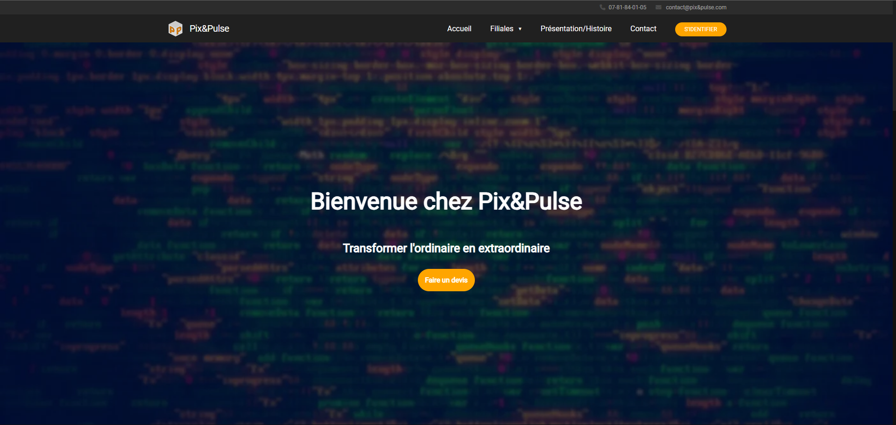

Basile ALEVEQUE-DESSOLIN
Bienvenue sur mon portfolio, pour en savoir plus sur moi vous n'avez qu'à défiler !

Salut ! Je suis Basile.
Je suis un développeur web junior passionné par la création d'expériences en ligne innovantes. Avec une expertise dans plusieurs technologies, je transforme les concepts en sites web élégants et fonctionnels. Explorez mes projets pour voir comment je combine créativité et compétences techniques pour produire de jolies choses.

Développeur Frontend/Backend
Langages :
HTML, CSS, SASS, JS, Angular, PHP, Symfony, SQL
Outils de développement :
Git, Github, Bootstrap, Wordpress, MySQL
Systèmes d'exploitations :
Windows, Linux
-
- La suite...
- En 2024-...
- On verra bien...
- Ce que l'avenir nous reserve...
-
- Titre pro dev web/web mobile
- En 2023-2024
- RNCP Nv.5 (Bac+2)
- Human Booster - Bel Air Camp
-
- Baccalauréat
- En 2022-2023
- Obtention du Baccalauréat
- STI2D - La Martinière Diderot



 En savoir plus...
En savoir plus...
Site pour Pix&Pulse
Pix&Pulse est la société que j'espère lancer après ma formation.